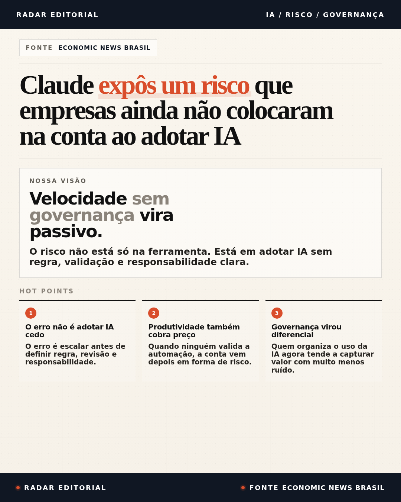
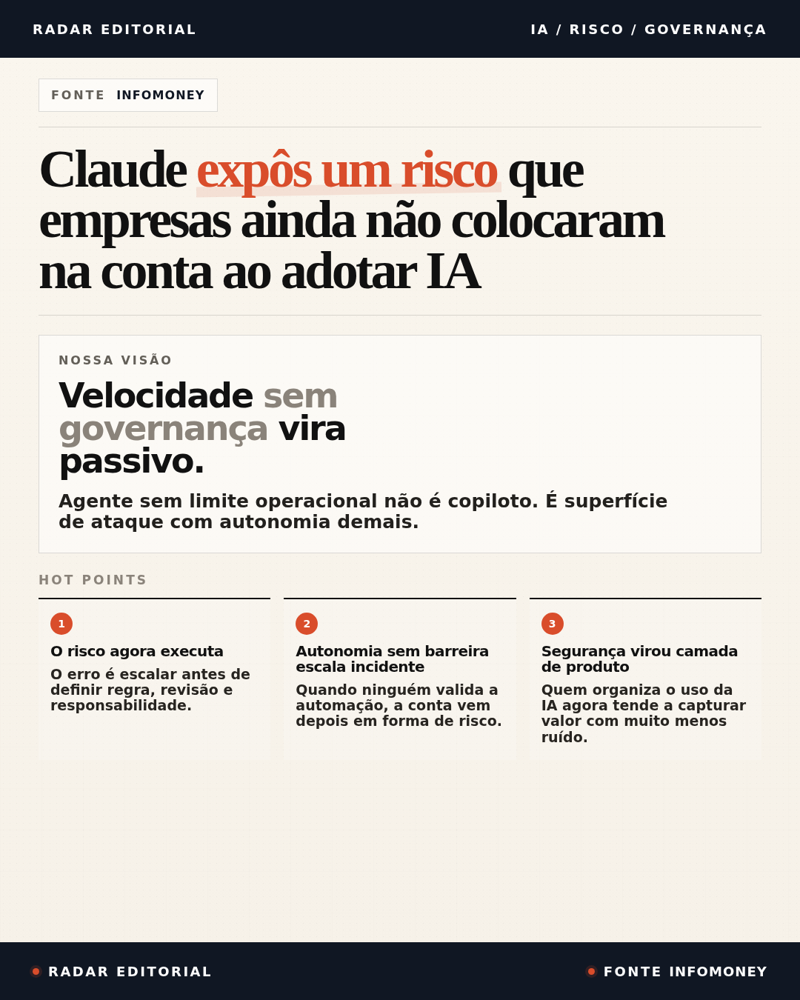
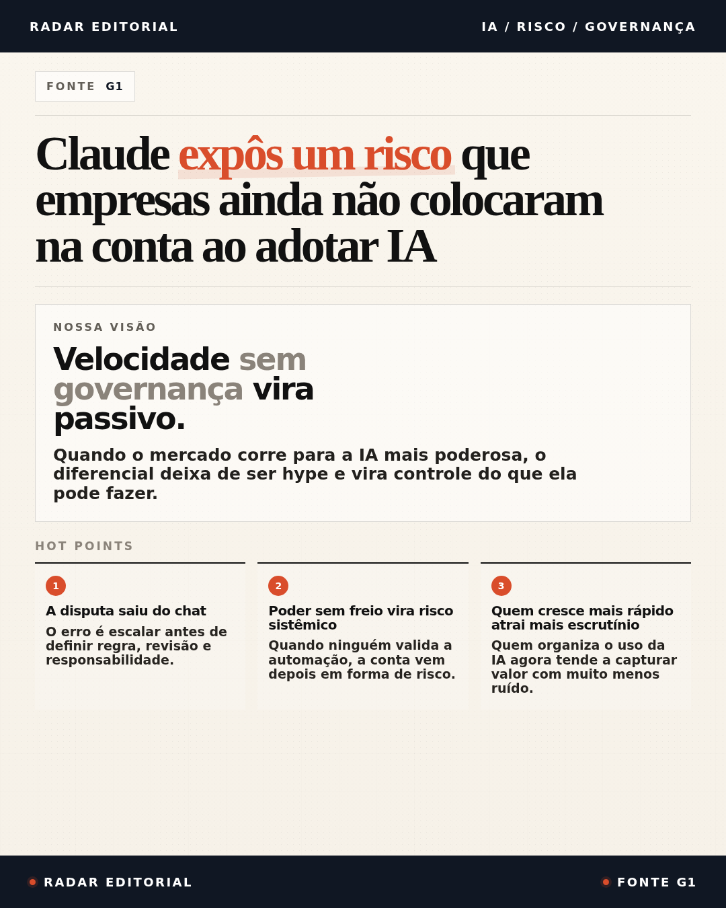

Claude expôs um risco que empresas ainda não colocaram na conta ao adotar IA
Ângulo editorial: o custo da IA não está só na ferramenta — está na falta de regra, validação e responsabilidade.
Uma seleção curta para acompanhar a conversa sobre Claude, Anthropic, segurança operacional e a corrida por modelos mais poderosos.

Ângulo editorial: o custo da IA não está só na ferramenta — está na falta de regra, validação e responsabilidade.

Ângulo editorial: autonomia sem limite operacional deixa de ser conveniência e vira superfície de ataque.

Ângulo editorial: a disputa deixou de ser hype de chatbot e passou a ser poder, restrição e controle de capacidade.